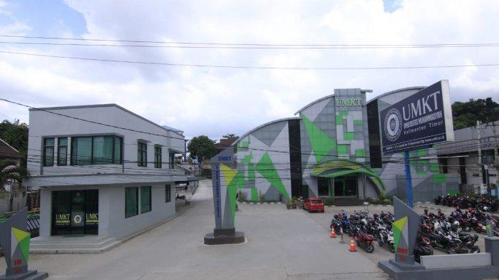
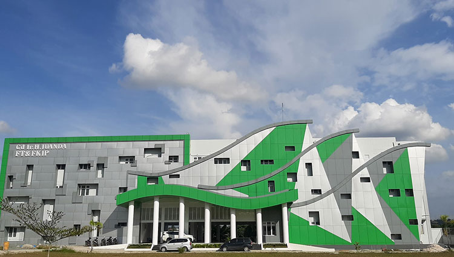

Kenapa Memilih UMKT
Universitas Muhammadiyah Kalimantan Timur (UMKT) merupakan salah satu dari 172 kampus Perguruan Tinggi yang dimiliki oleh Persyarikatan Muhammadiyah. Kampus ini terletak di Samarinda, ibu kota provinsi Kalimantan Timur. Kenapa harus memilih kuliah di UMKT? Karena UMKT Memiliki Fasilitas yang sangat bagus dan lengkap, UMKT juga memiliki lift di setiap gedung nya. UMKT Juga salah satu kampus terfavorit dan terbesar SeKalimantan, UMKT juga membuka pendaftaran via infulencer pertama kali nya sebuah kampus membuka pendaftaran via infulencer.
UMKT Dalam Angka
-
"Cikal bakal UMKT adalah STIKES Muhammadiyah Samarinda dan STIE Muhammadiyah Samarinda"
- STIE Muhammadiyah Samarinda berdiri pada 15 September 1981
- STIKES Muhammadiyah Samarinda berdiri pada tahun 2009 dengan Akreditasi Institusi B (Sangat Baik)
- UMKT memiliki 4 Fakultas dan 16 Program Studi
- Jumlah mahasiswa aktif UMKT lebih dari 2.000 orang
- Jumlah dosen UMKT lebih dari 120 orang
- Jumlah karyawan UMKT lebih dari 70 orang
KerjaSama Dalam dan Luar Negeri
- Kerjasama Fakultas Kesehatan dengan Chulalongkorn University Thailand
- Double Degree Programs (proses inisiasi): UMKT-Kingston Univ. UK; UMKT-Derby Univ. UK; UMKT-Charles Darwin Univ. Australia; UMKT-Kyungdong Univ. Korea Selatan; UMKT-NTUST Taiwan; UMKT-NTUT Taiwan
- Kerjasama Penguatan SDM dengan Universitas Muhammadiyah Surakarta (Terakreditasi Institusi A — Unggul, dan PTS Terbaik di Indonesia berdasarkan Ranking Internasional QS Star 2016-2018)
Aset
UMKT mempunyai dua kampus induk dengan luas area sekitar 15 ha. Kampus 1 UMKT terletak di Komplek Perguruan Tinggi Muhammadiyah, Jl. Ir. H. Juanda No. 15 dan Kampus 2 UMKT terletak di Jl. Pelita Komplek Pesona Mahakam. Penyelenggaraan pendidikan di UMKT ditunjang fasilitas pembelajaran yang sangat memadai, mulai dari ruangan kelas yang representatif, laboratorium yang lengkap, dan perpustakaan berbasis teknologi informasi.
Hidup Di Samarinda
Siapa yang tidak kenal dengan Kota Samarinda, kota yang kaya dengan sumber daya alam dengan kehidupan yang dinamis dan selalu saja muncul hal-hal baru yang kita temui hampir setiap hari. Samarinda juga sebuah Ibu Kota provinsi Kalimantan Timur dengan jumlah penduduk yang telah mencapai satu juta jiwa. Sekolah yang unggul banyak terdapat di Samarinda, demikian juga dengan beberapa Universitas yang tersebar di Samarinda termasuk di antaranya Universitas Muhammadiyah Kalimantan Timur.
Selamat Bergabung Dengan UMKT


